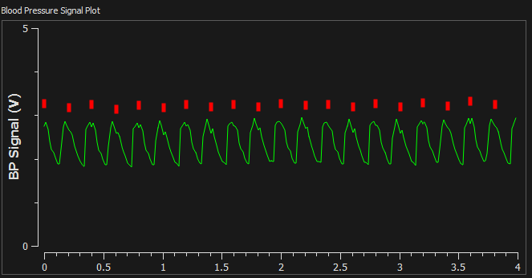

Signal Monitoring Tool
The blood pressure triggering device needs to have an interface so that the researcher operating it can tell whether it is functioning properly. The interface must provide the operator with near real-time feedback on the signal level of the pressure sensor, and the timing of the trigger pulses. The interface should provide the researcher with an easy way to export the pressure data for further analysis, and should be sufficiently simple to install on a new computer that it can be quickly transferred via USB key or network drive to a different computer.
The tool is based entirely on this excellent project. All I did was modify the form, integrate the python serial library to get the sensor values from the Teensy over Serial, and add a couple of buttons and menus to control everything. All told, it only amounted to about one day of work. Finally, I used py2exe to make it into a portable application, so that it can be run on the computers on the scan room without having to worry about setting up a python environement.
Here's an image of the finished monitoring tool in action.
